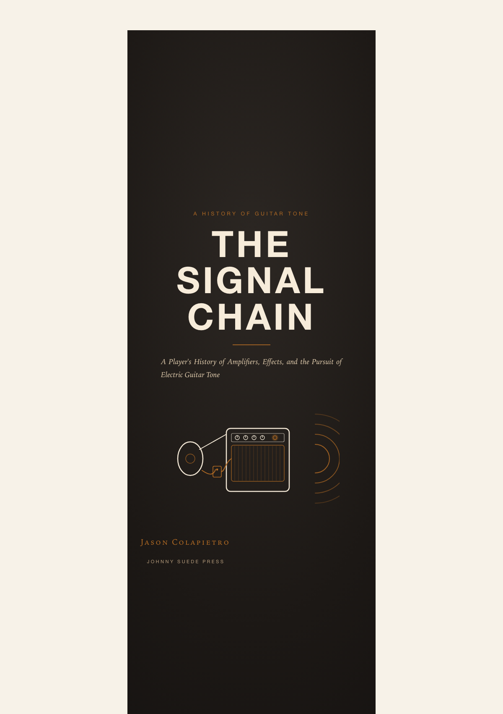
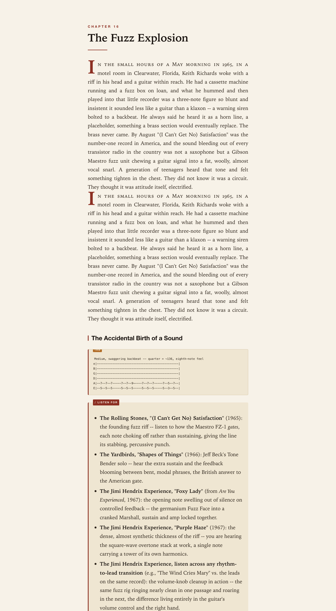
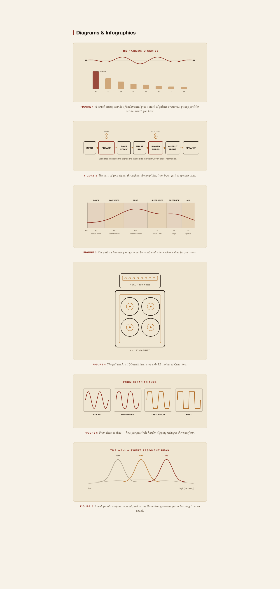

By August "(I Can't Get No) Satisfaction" was the number-one record in America, and the sound bleeding out of every transistor radio in the country was not a saxophone but a Gibson Maestro fuzz unit chewing a guitar signal into a fat, woolly, almost vocal snarl. A generation of teenagers heard that tone and felt something tighten in the chest. They did not know it was a circuit. They thought it was attitude itself, electrified.
JOHNNY SUEDE PRESS // GUITAR.SOLUTIONS
The Signal
Chain.
A player's history of electric guitar tone, and the self-taught life behind the sound. Chapter one and three full lessons are free. One $9.99 unlock opens everything.
by Jason Colapietro · writing as Johnny Suede
MODEL: A LIFE IN SIX STRINGS
968 PAGES
50 SONG LESSONS
46 CHAPTERS
100+ TAB FIGURES
ALL ACCESS: $9.99
INPUT · THE BOOK
The whole journey of a string's voice, from steel to speaker.
An illustrated history of electric guitar tone: the amplifiers, the pedals, and the players who bent electricity into a voice. It reads like a story, keeps the science honest, and lands every idea in tablature you can play. From the Rickenbacker Frying Pan and Leo Fender's tweed to fuzz, the wah, the Big Muff, high gain, and digital modeling, with deep dives on Hendrix, Clapton, Page, Gilmour, Van Halen, SRV, and The Edge.
The complete edition, A Life in Six Strings, adds the life behind the sound: a self-taught memoir, a theory curriculum, the gear of a life on the road, and a songbook.
"The serial number that didn't exist had quietly become my proof of identity."

PREAMP · INSIDE THE PAGES
History that reads like a road book. Diagrams drawn like schematics.


HAND-TYPESET HTML + SVG · 12 ORIGINAL DIAGRAMS · CRISP ON SCREEN AND IN PRINT
TONE STACK · THE LESSONS
Fifty iconic tones, decoded knob by knob.
Every lesson in The Tone Workbook gives you the real rig, an honest recipe you can dial on affordable gear, the theory underneath, and original tab drills. No secret-settings folklore. Six of the fifty, at a glance:
Johnny B. Goode
Chuck BerryBright semi-hollow jangle pushed into the first hair of tweed breakup. Clean enough to bite, dirty enough to growl.
VOLUME
TREBLE
BASS
REVERB
LESSON 02/50 · OPEN THE WORKBOOK
Voodoo Child (Slight Return)
Jimi HendrixA vocal, throat-of-God Strat through a swept wah and barely-tamed fuzz. Rhythm and lead become the same conversation.
FUZZ
GAIN
MIDS
TREBLE
LESSON 12/50 · OPEN THE WORKBOOK
Back in Black
AC/DCAn SG straight into cranked Marshalls. No pedals, no tricks: wood, fingers, and power tubes pushed just past clean.
GAIN
BASS
MIDS
TREBLE
LESSON 20/50 · OPEN THE WORKBOOK
Eruption
Van HalenThe brown sound: liquid, singing saturation that stays clear and vocal at maximum aggression, with a slow phaser swirl.
GAIN
MIDS
TREBLE
PHASER
LESSON 32/50 · OPEN THE WORKBOOK
Smells Like Teen Spirit
NirvanaWhisper verses, detonation choruses. A clean amp and one distortion pedal doing the loudest jump cut in rock.
AMP GAIN
DRIVE
TONE
REVERB
LESSON 38/50 · OPEN THE WORKBOOK
Where the Streets Have No Name
U2 · The EdgeGlassy chime multiplied by a dotted-eighth delay into a self-harmonizing cascade. The delay is the second guitarist.
GAIN
TREBLE
DLY MIX
REPEATS
LESSON 44/50 · OPEN THE WORKBOOK
Three lessons, free, in full
// NO EMAIL. NO PAYWALL. JUST PLAY.
14
Purple HazeTHE JIMI HENDRIX EXPERIENCE · 1967
Steal the E7#9 grip, the tritone hook, and the fuzz-cleanup volume trick.
INTERMEDIATE
22
Comfortably NumbPINK FLOYD · 1979
Steal bend-to-pitch patience, chord-tone targeting, and solo architecture.
ADVANCED
28
Pride and JoySTEVIE RAY VAUGHAN · 1983
Steal the Texas shuffle engine, the rake, and a vibrato with a voice.
ADVANCED
POWER AMP · THREE EDITIONS
Pick your edition. Preview free. One unlock opens all three.
A Life in Six Strings
968 PAGES · MEMOIR + HISTORY + 50 WORKSHOPS + GEAR + SONGBOOKEverything in one volume. The self-taught memoir, a theory curriculum, the full tone history with all fifty lessons interleaved as workshops, the gear of a life on the road, and a songbook.
Opens with the pre-memoir Six Strings, No Serial Number, a first taste of the forthcoming Loaded.
The Signal Chain
493 PAGES · 8 PARTS · 46 CHAPTERSThe complete illustrated history of electric guitar tone, with the diagrams and tablature woven through.
The Tone Workbook
351 PAGES · 50 SONG LESSONSFifty iconic tones decoded: the real rig, an honest recipe, the theory underneath, and original tab drills.
Free gets you chapter one in every edition, plus three full sample lessons. The $9.99 unlock opens all three editions in your browser and the PDF downloads. Already purchased? Restore access.
THE READING ROOM · FREE
Print the Quiet
A nine-part series on tone, dynamics, and the parts of a record that never reach the lead sheet — Jeff Buckley’s Hallelujah at Bearsville, the loudness war in numbers, the religion of the compressor, the room as an instrument. Free to read, a companion to the book.
EVERYTHING ELSE · THE CATALOG
Everything I make
Everything else off the same desk — books on tone and on who owns creative work, the apps I build for guitarists and singers, and Suede Labs AI underneath them all.